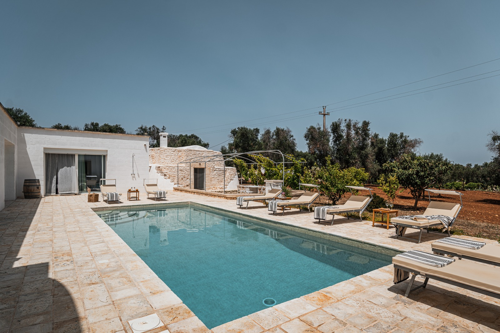

€950.000
Carovigno · Puglia · Italy
Carovigno countryside compound that pairs a comfortable modern villa with an authentic stone Saracen trullo guesthouse and a built private pool inside dry-stone walls — old mixed with new, ~5 minutes from the sea.
Opened 14 Sep 2026 on Apulia Houses; For Sale €950.000; ~200 m² / 5 bed / 3 bath / land 15,000 m²; outdoor kitchen, wood oven, alarm; Energy Class A4; habitable now.
Open listing